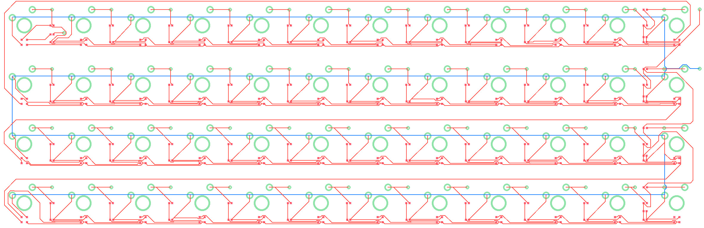
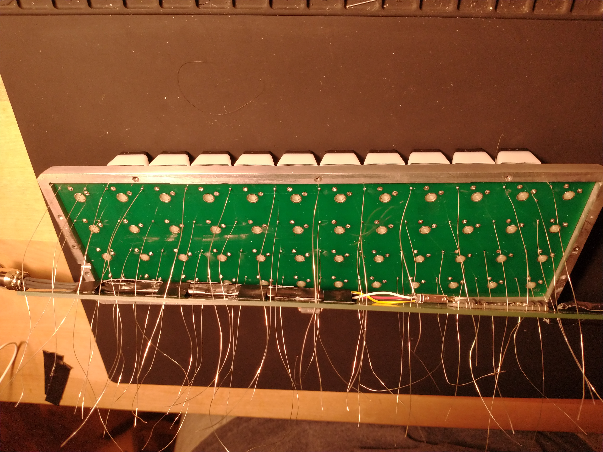
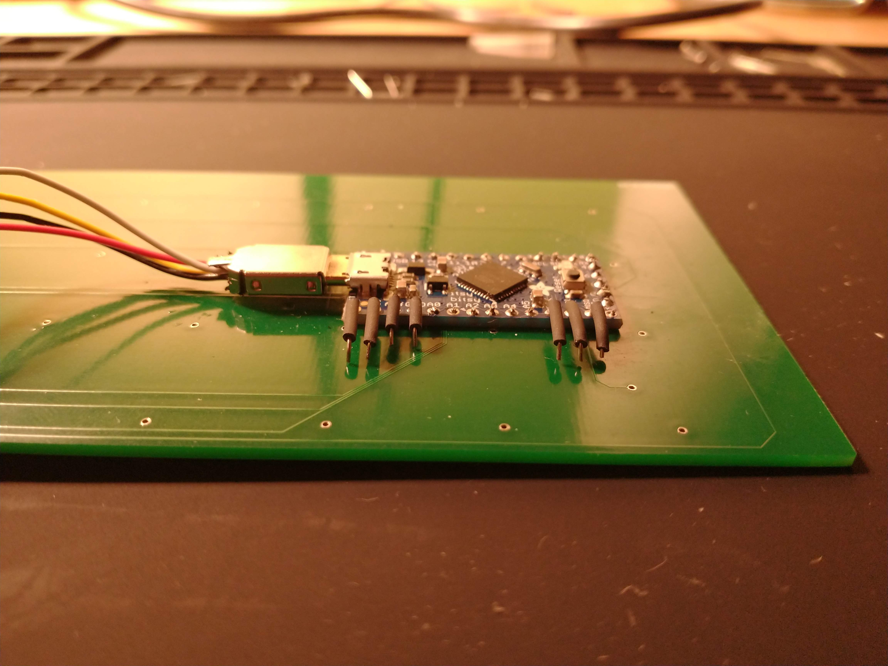
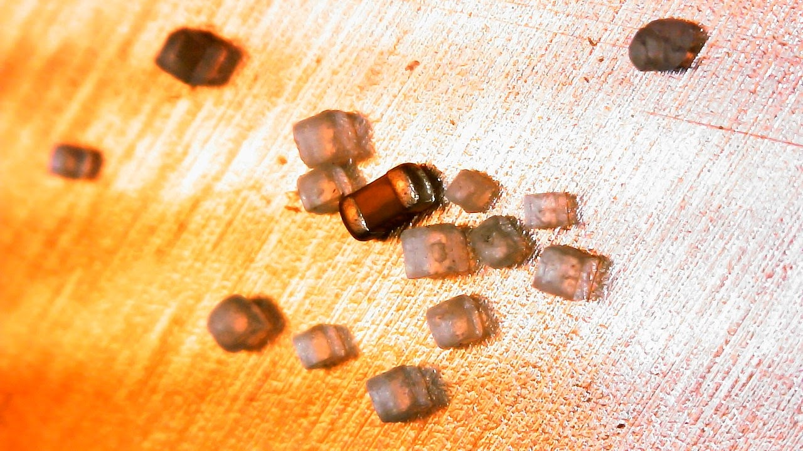
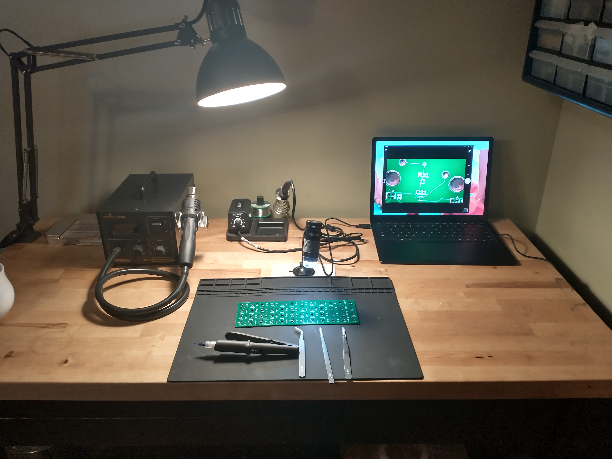

Why is the space-bar so wide? My thumbs are just as capible as my fingers, they articulate just the same. Yet,
the two of them have been assigned a singular purpose, to add space.
The goal of this project was to implement
all of the little things I wished were different about my keyboard. I wanted a keyboard which freed my thumbs from the monotony
and allowed them greater purpose beyond adding space. I wanted it to be orhtolinear to reduce strain.
I wanted it to be layered to reduce the amount of finger movement. I wanted it to take up far less
space on my desk. I wanted RGB.
Since I wanted to have backlit keys, and a good clicky feel, I found myself needing to use through-hole switches.Which meant I couldn't mount any large components on the back side of the board. I could have made room for these larger components by making the board taller, or wider, but this would have violated one of my primary design requirments. So, I decided to do something new and implement what I call the bi-plane design. Two PCB's stacked on top of each other with connections at the origin of each signal.
Another oddity in this design is the integration of an entire pre-assembled development board onto the PCB. The motivation behind this decision was the desire to minimize hardware debugging at all costs. I didn't have enough experince to be confident that novel power/timing circuity of my design, would work on the first try, and this didn't seem like the time to learn. Besides, adding 3mm to the overall thickness in order to save potentially months of time, seemed like the obvious choice.
| Description | SKU | Distributor | # |
|---|---|---|---|
| RES 4.7K OHM | 1276-1001-1-ND | Digi-Key | 50 |
| ADDRESS LED | 160-2263-1-ND | Digi-Key | 50 |
| CAP CER 0.1UF | 1276-1001-1-ND | Digi-Key | 50 |
| PISO SHIFT REG | SN74LS674DW | TI | 3 |
| ITSYBITSY 5v | 3677 | Adafruit | 1 |
| RGB SWITCHES | MX1A-E1NB | MechanicalKeyboards | 50 |
| AVIATOR USB CABLE | N/A | N/A | 1 |
When I originally started researching this project I came across similar work done by Krishna Mani which implemented the core USB functionality I needed for the 32u4 board. Their repository goes into some detail on how the USB section works, and also links to other extrememly helpful sources, so I wont repeat that information here. However, I will clarify one thing that caused me confusion. The CPU in the 32u4 is connected to the USB device via dual port FIFO RAM. This is why you'll see the same memory location -- i.e. UEDATX -- being written to consecutivly, seemingly clobbering the previosly written data.
This keyboard is based on PISO shift registers rather than a scanning matrix. Given the relatively slow clock of the CPU, we do not have to worry about timing in regards to the register's functions.The maximum transition period for the shift register is 45 ns, and the best case senerio for the 32u4 is 62.5 ns per operation. So, there is no worry of data loss between switching the registers from input to output.
Each of the three registers have their control lines tied together so that they can be controlled in lock step by a single GPIO pin. The registers read in the current state of the keyboard and then that data is shifted into the CPU. The current state and previous states are compared and, in most cases, if change is detected, the appripriate key is added to the HID report and the LED animation is triggered. If, however, the key is a layer shift key, nothing is sent to the host and instead the internal key mapping is adjusted appropriately and the LED base color is changed so that the user knows that a layer change has occured.
The 32u4 is just barely fast enough to keep up with the timing requirments of the LEDs used in this project.
The LED datasheet states the required
intervals are 300ns and 900ns, with an allowance of (+-) 80ns. With a single cycle of the 32u4 taking 62.5 ns, the processor only has time to excecute
4.8 instructions during the shorter of the two intervals.
Using a logic analyzer proved invaluable when writing and debugging this code, because it meant I did not have to inspect the generated assembly and
calculate the timing by hand. Also, given that every part of this project was unproven debugging was even more difficult than usual due to the potential
for both hardware and software bugs to occur at the same time.
The follow section shows simplified examples of the problem faced and measurements of the timing.
In this first example, we start off simple and try to send 10 zeros.
This works perfectly fine and we see that the resulting output is within the timing requirments.
Next, we will try and send 10 ones.
This does not work. Even with out any delay, the signal stays low for far too long.
Here we see a solution to the problem. Each time a for-loop executes, the conditional has to be checked and the counter has to be incremented. This extra overhead was taking longer than the 300ns we had to work with. The solution I came up with was the adjust when this overhead occured.
With the overhead moved into the middle of the loop, the timing is now compliant with the requirments. In the full implementation, this code has to have another conditional added in order to adjust when the overhead occurs depending on what value needs to be sent.
The assembly proccess for most of the components was relatively common, except for the implementation of the previously mentioned bi-plane design and the flatmounting of the development board.
Although not complicated, the Hair Follical Technique was an interesting procedure and the best way to implement
the bi-plane design.
First, long strands of wire were soldered to the top board.

Then, these long wires were threaded into the bottom board one row at a time.
The board was slowly tilted and lowered, while more wires were threaded.

Although the flatmounted development board idea worked really well in the end, it took a bit of experiementing to get a good connections on all of the pads. Strong surface tension kept me from applying solder through the header holes, and a slight curve in the board kept me from first applying solder balls to the pads and then attaching the board. What worked in the end was using anchoring pins to facilitate the connection between the pads and the development board.
A small blob of solder was added to the end of each pin before being placed through the header holes. Then the pin was heated and more solder was added, ensuring a secure connection to both boards.
This experimentation also lead to a perfect solution to a previouslt unaddressed problem. Due to the development board being sandwiched between the two PCBs, I did not have any access to the pins after assembly for further dubugging and software modifications. However, bending the anchoring pins over and wrapping them in a little heat shrink created perfect programming hooks.

If I were to do this project again, there are a few major changes I would make
Firstly, I would not use 0402 components. They are just too small to handle and I had plenty of room to use a larger package. Here is a picture of the resistors next to some Morton salt crystals.
In order to work with these components I needed to use a USB microscope in order to place them.
Secondly, I would change which GPIO pins the shift registers are connected to. It is important to note that consecutive GPIO pins are not neccisarily connected to consecutive memory location. Because of this, when data is read from the shift registers it takes three operations. A bit mask is used to check each bit independently. A much more elegant solution would be to use GPIO pins which are connected to consecutive memory so that a single bit mask could be used to read all three shift registers at once.